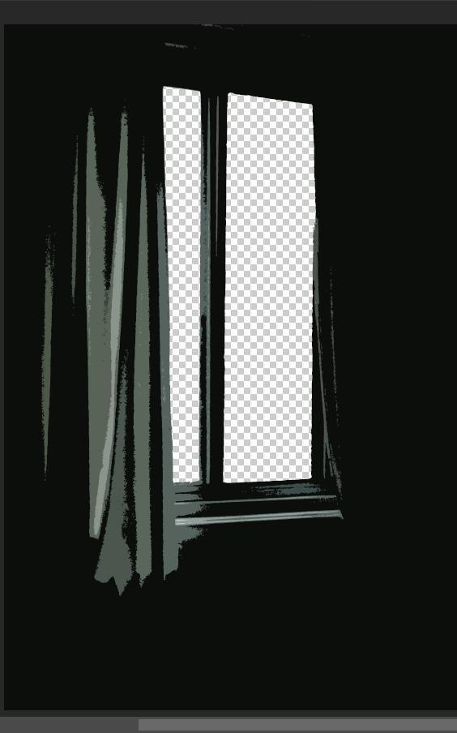
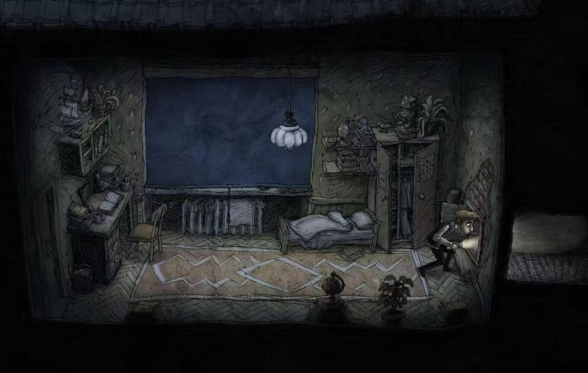
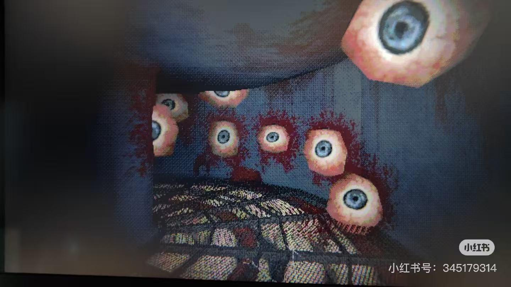
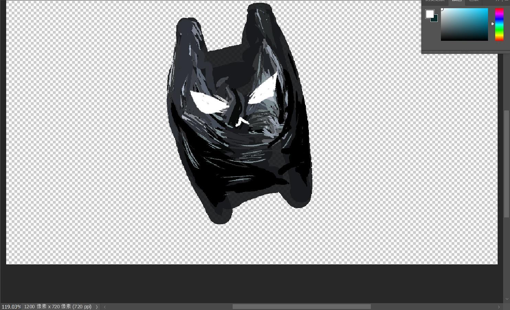
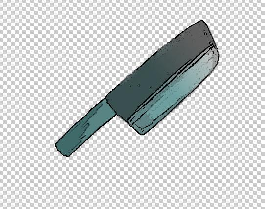
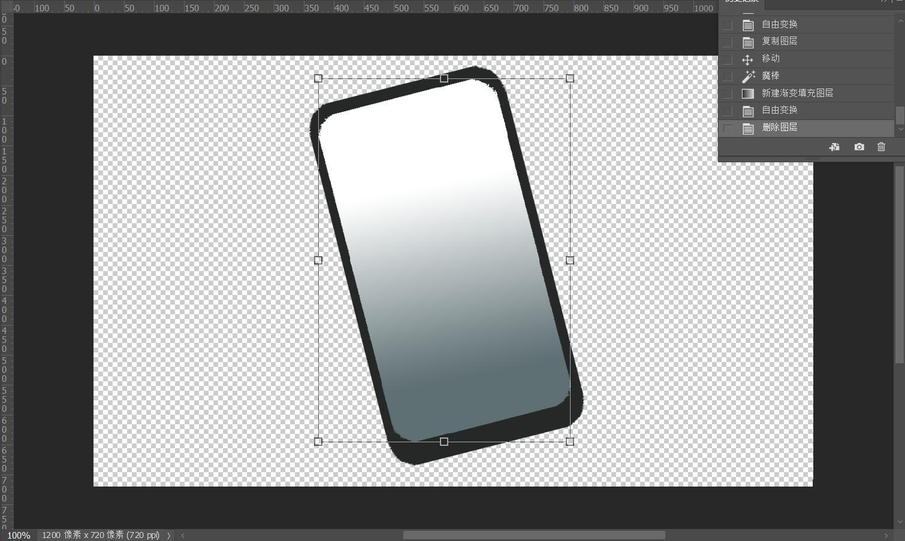

玩家扮演失忆的伪人，在不同物种之间隐藏真实身份，探索无限流世界真相。
叙事 rpg，主要玩法包括：
1.分支叙事
玩家的选择能塑造主角性格和行为习惯，会影响游戏世界的集体意识。
2.道具系统
八维功能道具搜集，可选择一项手持物品进行场景交互。
3.卡牌任务系统
玩家在不同的剧情阶段扮演不同的人格卡牌，需要完成人格卡牌上的任务才
能结算成功。
4.耐心值系统
所有 npc 和建筑物都设有耐心值，玩家的需要尽可能减少怀疑值存活。
5.自定义表情/器官
玩家遇到 npc 时可以选择调用心、脑、腹其中一个器官进行观察，交流前可
以自定义表情，会得到不同反馈；在章节末尾可以根据解锁的成就自定义五官。
独立游戏策划案
（一）主要设定
主控所处的世界是一个蛋，里面所有人本质都是同一个人。他们死后不断转
生，转生后清空记忆，扮演着不同的角色，并严格遵循人设活动。转生本身有先
后顺序，但会在一条时间线上无序穿梭。因此，整个蛋都是主控某个时期的切片，
直到所有人设都被扮演完毕这个宇宙就关闭，主控就能飞升成人，作为一个婴儿
诞生在真实世界之中。
蛋的地理划分只有一个城市，城市内拥有人类社会应该有的标志性建筑。城
市边缘由一条列车轨道铺就，外面是虚无空间。真实人类只能通过列车往返蛋中
世界。
每个建筑和物品都有自己的性别，性别类型即八维功能。
游戏里的蛋，其社会结构和科技水平与现代世界相同，这是切片们依据人设
表演的结果。实际上蛋中世界并不完全遵循唯物世界观。
从真实世界的角度来看，存在多个蛋中世界，他们扮演的设定都不一样。
真实世界里，部分人类会定期被投放到蛋中世界，人们称其为副本任务。
故事初始设定：主控已经体验了所有人设，最后一个设定是一名作家。但是
出现 bug，它把整个鸡蛋的记忆全部想起来了，也得知了真实人类的存在。主控
因此疯了，迫切想要投胎成人。但它的生与死已经被设定决定好了，只有借助真
实人类的力量才能提早死亡。于是它在人设允许的情况下引诱了一个真人来杀死
自己。但它没想到被真人杀死后并不会马上投胎，其灵魂因为真实人类身上的道
具某转移到人类身上，只能用人类的方式进入人类世界，即乘坐列车。主控醒来
后失去了所有记忆，需要玩家进行探索。
（二）主要物种
伪人：代指蛋里的主控切片，大部分伪人只是在扮演人设而没有任何自主意
识。会攻击异类，即如果某个生物没有扮演任何设定，自由行动，有自主意识，
被察觉后会对异类进行清除。它们对异类的清除是出于本人，本身并不知道“真
实人类”的存在。
外貌上和人类有区分，伪人们拥有三只眼睛，第三只眼睛的位置各不相同。
行为上偏执地遵循某种人设，人设之外的行动非常混乱，经常出现常识性错
误。
人类：认为蛋是一个副本，并找到规律，只要在里面扮演某个人设就可以逃
脱伪人的追杀。这里人类通过扮演九个特定的人设存活，即九张人格卡牌。人类
具有 san 值，对扮演人设的认同度=精神污染程度。
八维生物：所有可探索的道具、地点都有八维属性，本质上作为生物存在。
一号卡 道德卫士
人类美德公约的拥护者，道德铁律是你的武器。
卡牌持有期间：
1. 完成一次完美的道德审判。
2. 收到的道德指责理应少于十次（10/10）
二号卡 圣徒
心是敞开的伤口，爱是流淌的血液。你是爱的使徒，也是爱的奴隶。
卡牌持有期间：
1. 收获他人的感激，那是你的食粮。
2. 获得一份真挚的表白。
三号卡 霸道总裁
你的西装纤尘不染，眼神三分薄凉七分讥诮。
卡牌持有期间：
1. 找到你的小白花女主（0/1）
2. 每日一胃疼（0/1）
3. 集齐霸总身边标配的 npc（医生/管家/豪门母亲/破产王家人）
四号卡 诗人
你关心此时此地之外的一切。
卡牌持有期间：
1. 尽情地创作属于你的诗篇。
2. 现实都是狗屎。
五号卡 解剖师
世人往往用情感的皮肉包裹真相，而你正好有一把手术刀。
卡牌持有期间：
1. 异议！找出他人话语中的逻辑漏洞（0/10）
2. 你永远逻辑自洽，胡搅蛮缠并非你的特权。
六号卡 祭品
未来是吃人的野兽，所以你选择献祭此刻。黑暗触摸着你……就像最初那样。
卡牌持有期间，你什么也不用干。作为祭品，你已经够可怜了。
七号卡 酒鬼
你不记得昨天，也不关心明天，只在乎下一杯是什么味道。
你的行动由骰子来决定——你当然可以 sl 出想要的。
八号卡 勇者
符合一切刻板印象的勇者。
卡牌持有期间，你：拯救世界，世界当然只有一个。
九号卡 清洁工
世界理应是安全的。维持原本的模样，就很好。
卡牌持有期间，你：清除外来者。（0/10）



1.初始房间
主控初始位置。功能是保护主控的人设稳定性和安全。若主控破坏房间原本
的布局，会减少房间的耐心值（初始耐心值 100），耐心值归 0 则房间坍塌。
可探索物品：尸体、书柜、白色毛熊、衣柜、窗帘、时钟、床底、镜子、床、
门
走出房间之前，外部的地图都处于“未加载”的迷雾状态。
（房间窗户设计）
（房间内部参考）
若主控选择走出房间关上房门，房间耐心值会清零。
2.走廊
走出房间后是一片走廊，走廊连接着蛋中世界的所有内部房间，但大部分门
无法被打开。
（走廊构造参考，触发 be 结局版）
3.便利店
可购买部分八维道具，会遇到三号卡牌拥有者。
（蓝白色调，便利店外观参考）
4 站台
人类来往于蛋中世界和真实世界的唯一渠道。副本结束前，需要乘坐列车离
开。
可探索区域：站牌、列车、休息室
背景故事补充：切片一开始只有九个人，他们分别代表了九种最典型的性格
和身份。九个人都认为自己是最后一名人设扮演者，在站台厮杀的过程中意外进
入列车，来到真实世界后变成了九张人格卡牌。至此，这个蛋的位面和真实世界
提前打开了通道，九个切片消失后，蛋中世界繁衍出了更多不同的人设切片。



（一）垃圾袋猫
1.功能：玩家捡到垃圾袋猫后开启背包功能。
2.介绍：是猫也是垃圾袋，所有道具都可以放进去收着
（垃圾袋参考）
（二）垃圾袋猫本体
1.功能：点开垃圾袋猫（背包）后出现的默认物品，和大多数物品交互会有
吐槽。
2.介绍：是猫也是垃圾袋，在垃圾袋里它就是一只猫。
（垃圾袋猫设计）
（三）【真实菜刀】SE
1.功能：初始房间捡到的武器，只能伤害人类。
2.介绍：真实菜刀，它只能砍中真实之物
（真实菜刀设计）
（四）【水脚的大坝】TE
1.功能：闹钟，可以在该起床的时候踹醒你。
2.介绍：从后袭来的大脚，让你远离躺平的美好生活。水脚的大爸就是水脚
的大爸，既不卑微，也不伟大。
（五）【<玩家>（主控名）之诗】NE
1.功能：出示后打消人类的怀疑，增加伪人的怀疑，多次出示可以增加伪人
的觉醒程度。
2.介绍：一切都是被设定好的程序，除了它。
（六） 【一车面包人】NE
1.功能：关键判定会多出十六枚骰子。
2.介绍：一辆叫做面包体的卡车，集装箱里塞着 16 个形状不一的面包人……
（七）【拖鞋】SE
1.功能：作为拖鞋很保暖，但跑动时会被甩掉。作为武器攻击力为 1，但面
对部分特殊物品攻击力为 100。
2.介绍：毛茸茸的拖鞋，不知道被谁踢进了床底。
（八）【白毛熊】SI
1.功能：前期使用手机必须带着它。分离后作为白毛熊本体可以和不同物品
触发对话。
2.介绍：全世界最无辜的白毛熊。
（九）【手机】TE（毛绒熊被分离后）
1.功能：无论如何拍出来的照片里的人都在看着镜头。
2.介绍：你感觉那些白色坟墓下，有无数双眼睛正在苏醒。
（智能手机）